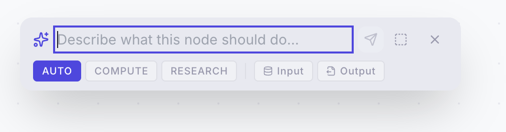
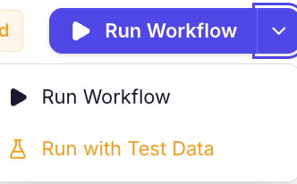
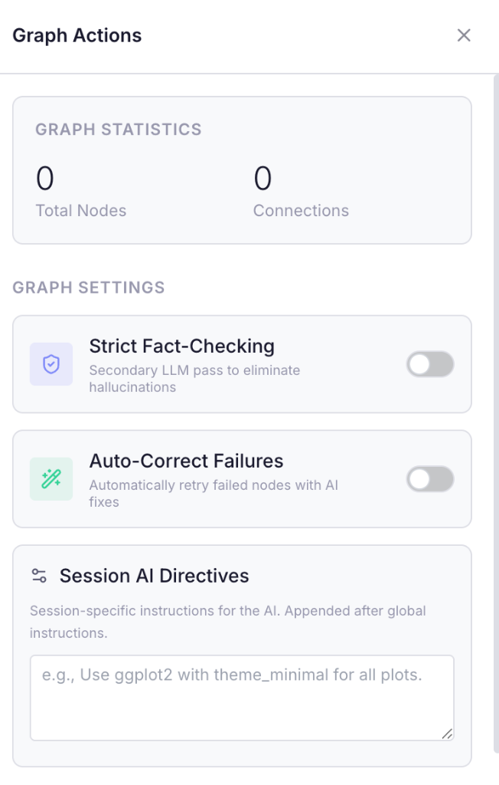

Graph View
Use Graph View to build, inspect, and run directed acyclic graph (DAG) pipelines. Each node is one step: code execution, AI research, or data management.
Creating a Graph
Create a graph in two ways:
- From the sidebar: Click Graph to open a new empty canvas.
- From Chat View: Click Step into Graph → in the chat header. If scripts ran in chat and no graph exists yet, approve the workflow review card first, then switch to Graph View.
Switching Between Chat and Graph
If a session includes a chat history, the graph header displays ← Back to Chat. Click it to return to the conversation without deleting your pipeline. Graph-only sessions hide ← Back to Chat.
rolv remembers whether you last used Chat View or Graph View for each session.
The Canvas

Use the interactive ReactFlow canvas to organize steps:
- Click empty space: Open the node creation prompt.
- Click a node: Open the Node Inspector on the right side.
- Drag a node: Move the node on the canvas.
- Drag from a handle to another node: Connect nodes with an edge.
- Scroll and drag background: Zoom and pan the canvas.
Runtime Settings

Click Runtime in the graph header to set runtime versions and the session execution target:
- Python Version: Use the global default or pin a project Python version (
3.10–3.14) inenv/python-requirements.txt. - R Version: Use the global default or pin a project R version (
4.2.3,4.3.3, or4.4.1) inenv/r-packages.txt. - Execution Target: Choose Target: Local Device or a saved remote target from Settings for all compute nodes in the session.
A colored dot appears on the Runtime button when a custom version pin or remote target is active. To override the target for one compute node only, set Execution Target in the Node Inspector.
Node Types
Compute Nodes (💻)
Compute nodes run Python, R, or Bash scripts. Use compute nodes for calculations, statistical tests, plotting, file processing, and loops over many items. Compute scripts read and write files inside the session working directory.
Research Nodes (📖)
Research nodes use an AI assistant to read workspace files, search literature, and write Markdown reports. A research node does not execute Python or R scripts.
Use a compute node when you need scripts or large bulk downloads, then pass output files to a research node for interpretation.

Open a research node and select the Instructions tab to configure its mode, structured output, and batch iteration.
Research Modes
| Mode | Allowed Tools | Use When |
|---|---|---|
| Interpret / simple agent | Read local files and inspect plots only. No web, PubMed, or GEO search. | You want the AI to interpret tables or figures already on disk. |
| Literature review | Search PubMed, GEO, ClinicalTrials.gov, patents, and the web only. Cannot read local files. | You need literature evidence without local files. |
| Full (default) | Both local file tools and external search tools. | The step must inspect local results and search literature. |
How Research Nodes Receive Upstream Context
An edge into a research node guarantees two things:
- Parent nodes run first.
- rolv passes a short text summary of parent labels, log excerpts, and output file names (up to about 4,000 characters per parent).
Name required files clearly in the research Instructions (for example, Read scores.tsv and summarize the top hits) so the assistant opens those files directly.
Structured Output (JSON for Downstream Nodes)
Enable Structured output when a downstream compute node must read tabular JSON instead of a long essay:
- Enter comma-separated field names (for example,
gene, evidence_level, pmids), or leave the field list blank so rolv infers a schema. - Structured output creates
{label}_node_output.jsonand{label}_node_output.mdalongside{label}_report.md.
Batch Iteration Across Items (ForEach)
Enable Batch iteration across items (ForEach) to run separate research queries across rows in a file (default 20 items, maximum 100 items):
- Reads items from CSV, TSV, JSON arrays, or plain text lines in a target file.
- Processes items in parallel with progress updates (
[1/10] ...). - Writes a unified JSON array (
<slug>-results.json) and a combined Markdown report (<slug>-report.md). - Supports optional strict fact-checking against retrieved tool outputs.
File Peeks and Output Files
By default, research file reads peek at the first ~20 table rows or ~100 text lines. In structured-output mode, the assistant can request larger reads (up to 2,000 lines).
After a research node succeeds, rolv displays the report in the Output tab, writes {label}_report.md to disk, and registers it in output.json.
Data Input Node
Define pipeline input variables and file bindings. rolv writes these values into input.json in the working directory before compute nodes run.
- Add key-value inputs (for example,
INPUT_FILE) and descriptions. - Validate tabular files (CSV/TSV).
- Expand Test data to write or run a sample-data generator script (see Test data).
A graph can have at most one Data Input node and one Data Output node. Select any node and press Delete or Backspace to remove it.
When you click Save as Recipe, rolv keeps input variable names, descriptions, and non-path defaults while clearing local file paths so recipes stay portable.
Test data
Open the Data Input node and expand Test data to generate mock input files before running with real data:
- Select R, Python, or Bash.
- Click Starter. rolv reads your pipeline scripts and fills the editor with a starter generator script that ends by writing
test_input.json. - Replace placeholder values so the mock files match your pipeline's expected columns and formats.
- Click Generate Data to run the script, copy
test_input.jsonvalues into Data Input fields, and saveinput.json.
Pipeline nodes always read input.json (never test_input.json). Click Run → Run with Test Data on the graph toolbar to generate sample data and run the workflow in one step. You must be signed in to use AI generation in Starter.
Data Output Node
Tracks artifact files produced by pipeline runs via output.json in the working directory. Shows filenames, AI-generated descriptions, source nodes, and timestamps. This node does not run code.
What the arrows between nodes mean
An arrow from node A to node B sets execution order: A runs before B. It does not automatically pass Python or R variables in memory.
- Compute nodes share one working directory. Node
Amust write a file (for example,hits.tsv), and nodeBmust open that filename. Both nodes read shared parameters frominput.json. - Research nodes receive a text summary from parent nodes and read files from the working directory by name.
Adding Nodes

Click empty canvas space to open the node generator bar:
- Enter a description to generate a labeled node with AI.
- Leave the text box blank to create an empty node.
- Choose AUTO, COMPUTE, RESEARCH, Input, or Output.
Click the + handle below any node to create and connect a new downstream node.
Node Inspector

Click any node to open the Node Inspector on the right side.
Header Controls
- Title: Click to rename the node.
- Compute / Research toggle: Switch node type (not shown on Data Input or Data Output nodes).
- Pin button (📌): Exempt the node from staleness re-runs.
- Shield button (🛡️): Mark the node as protected (touch-last). Auto-correct edits other nodes first and modifies a protected node only as a last resort.
- Status badge: Displays
Pending,Running,Success,Failed,Correcting, orStale.
Node Settings and Tabs
- Description: Short note explaining inputs, steps, and outputs.
- Execution Target (compute nodes): Choose Global Default, Local Device, or a saved remote target from Settings.
| Tab | Available For | Purpose |
|---|---|---|
| Code | Compute | Edit Python, R, or Bash code (Cmd/Ctrl-F search, expand view, per-node self-correct toggle, max retries). |
| Instructions | Research | Configure research mode, prompt, structured output, and ForEach settings. |
| Talk to Node | Both | Chat with the AI to inspect or edit this node. |
| Logs | Both | Inspect stdout, stderr, and auto-heal logs. |
| Results | Compute | View files produced by the node. |
| Output | Research | Read the rendered Markdown report. |
Pending Code Changes
When Talk to Node proposes a code change, it appears as a pending diff. Click Apply or Discard before running the node.
Running the Pipeline
Run Workflow and Run with Test Data

Click ▶ Run Workflow in the header to run the DAG in topological order:
- Run Workflow: Runs pending or stale nodes. Writes
input.jsonfrom Data Input bindings. - Run with Test Data: Appears in the Run dropdown when a Data Input node has a test script. Generates sample data, updates
input.json, and runs the workflow (see Test data for how to create a test-data generator script).
While running, click Stop to cancel the active local execution.
Smart Skip and Staleness
- Smart Skip: Nodes with
Successstatus that are not stale are skipped during full workflow runs. - Staleness: When an upstream parent runs again, downstream nodes become Stale so they re-run automatically on the next workflow run. Pin a node to skip staleness checks.
Self-Correction (Auto-Correct)
When enabled on a node and in Graph Actions:
- rolv sends failure logs to the AI error-diagnosis and code-editor service.
- If an upstream node caused the failure, rolv repairs that parent (respecting protected touch-last nodes) before editing the downstream node.
- rolv saves the previous code to code history, applies the fix, and retries (up to 3 attempts by default, configurable per node up to 5).
Graph Actions & Settings
Click the Sliders icon in the graph header to open Graph Actions:

- Graph Statistics: Total nodes and connection count.
- Strict Fact-Checking: Adds a second LLM verification pass during code generation.
- Auto-Correct Failures: Enables or disables automatic retry fixes for failing nodes.
- Session AI Directives: Session-level instructions appended after your global instructions.
Workflow Actions & Export

At the bottom of Graph Actions, export or package your graph:
- Build Report: Combine node outputs into a structured Markdown report.
- Create Code Repo: Export compute scripts into a standalone code folder.
- Write
rolv_manifest.json: Save lineage, node contracts, and parameters to the working directory. - Dump Recipe Snapshot: Export a full reproducible bundle snapshot.
- Export to JSON: Download the raw graph DAG JSON.
- Save as Recipe: Convert the graph into a reusable recipe bundle with detected
python-requirements.txt,r-packages.txt, andsystem-tools.txtfiles.
Ask a Human Expert

Click the graduation cap icon (🎓) on the canvas to send a scientific question to a human expert. You can attach the current workflow state for context. This service is experimental, so replies can take time.
Next: Recipes →